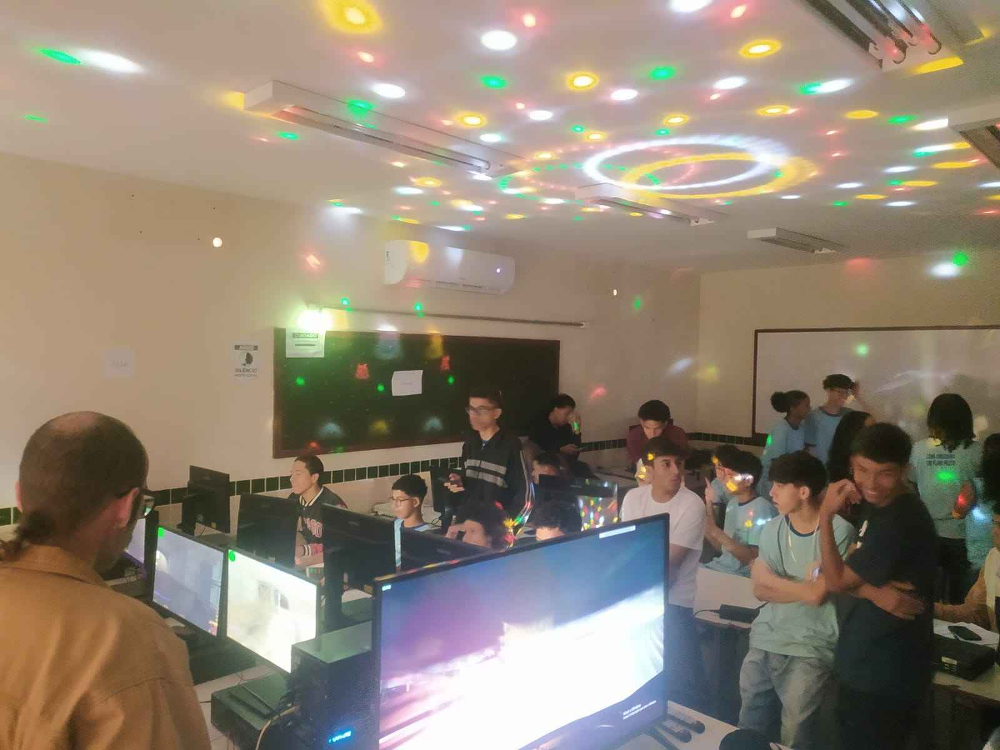
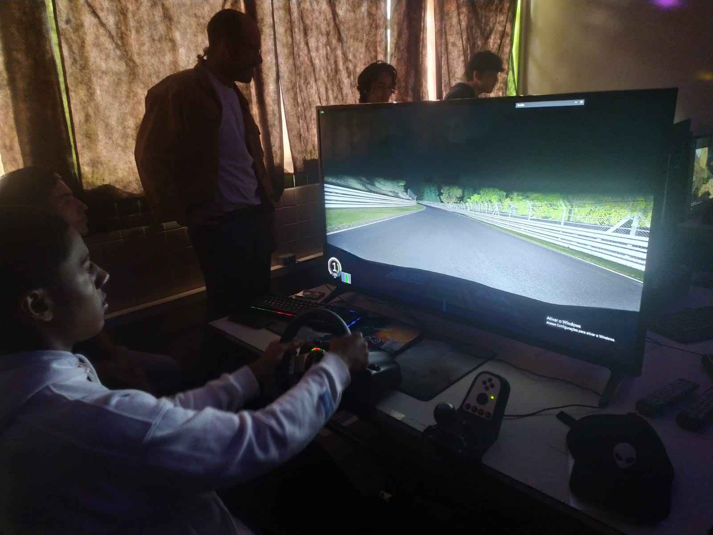
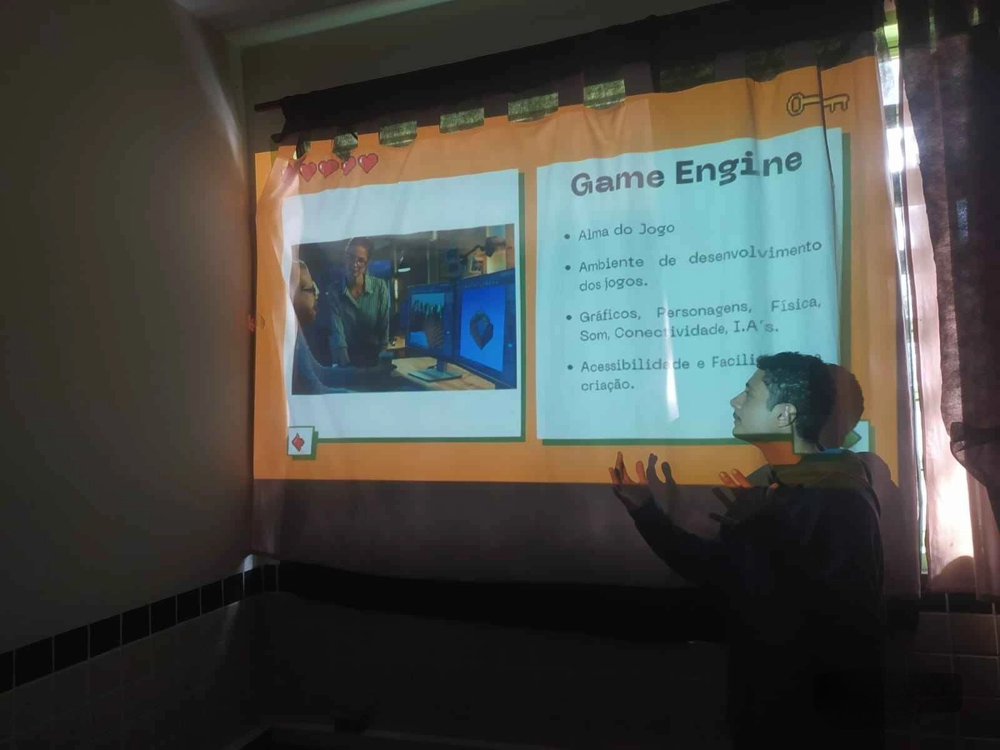
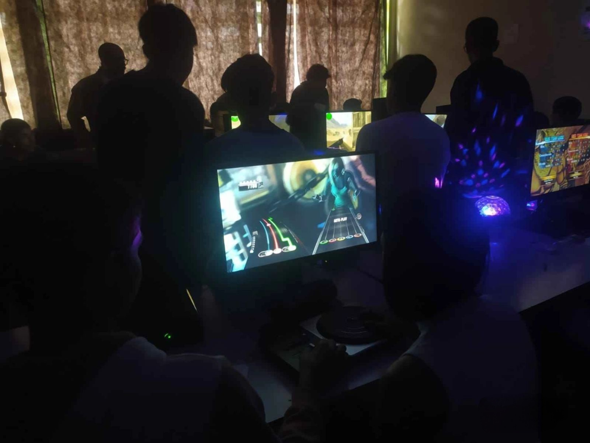

Feira Tecnológica
Resumo
Nosso trabalho consistiu em apresentar sobre a criação e desenvolvimento de jogos, ou seja, como é feito um jogo. Desta forma, explicamos como é carreira de um desenvolvedor de jogos, quais as ferramentas que eles utilizam, além de propor uma ideia de projeto para a escola. Ademais, após a apresentação destes tópicos, disponibilizamos nosso espaço para as pessoas que nos visitaram poderem jogar.
Introdução
O objetivo de nosso projeto era apresentar para as pessoas o processo de criação de um jogo desde o início. Pretendíamos mostrar para as pessoas que existem diversas portas para o mercado de trabalho, e uma delas é ser um desenvolvedor de jogos. Assim, conseguimos responder algumas dúvidas a respeito da carreira de um GameDev, como por exemplo, se é um trabalho bem sucedido. E sim, é um trabalho que te concede uma boa grana, dependendo de seu esforço e estudos. Além disso, queríamos proporcionar aos nossos visitantes experiências divertidas com diversos jogos, como simulador de carro, Just Dance e CS 1.6.
Desenvolvimento
Coletamos informações sobre o processo de criação de um jogo, mostrando principalmente como funciona uma Game Engine, que é a ferramenta principal que é utilizada para desenvolver um jogo. É praticamente o espaço de criação de um GameDev, o qual ele pode utilizar por exemplo, a Unreal Engine ou Unity, que são as principais engines. Ademais, analisamos o processo de aprendizado de um desenvolvedor de jogos ao longo de sua carreira, desta forma, percebemos que este trabalho exige aprendizado constante e ganho de experiências. Assim, este desenvolvedor precisa possuir um pouco de conhecimento de cada área, como linguagens de programação no back-end, design, modelagem, entre outros.
Conclusão
Portanto, percebemos que a criação de um projeto voltada para o desenvolvimento de jogos na escola, poderia ajudar bastante a introduzir os alunos nesta carreira profissional. Além disso, descobrimos que disponibilizar diferentes jogos para o pessoal experimentar, como um simulador de carro e Just Dance, atraiu um público muito grande para o nosso projeto.
Bibliografia






Identificação
Código da Atividade: F21-LAB02(sp)
Estudantes: 1C: Ádryan Isaque de Oliveira Teixeira | 2A: Carlos Batista Lopes de Carvalho
Neto | 3A: Alexandre Vasconcelos Vicente, Arthur Caio Barbosa Santos, Arthur
Felipe de Siqueira Duarte, Enzo Francisco de Moura Caeiro, Fernando Gabriel
Oliveira Merege, Henric Bento Moreira Alves, João Paulo Sousa Silveira, João
Pedro Andrade Abdão, Marco Antônio de Araújo, Nícolas Ramos da Silva, Pedro
Henrique S. de Vasconcelos Nunes, Victor Alves Bertolo | 3B: Alexander da Silva
Santana
Professor Orientador: Marco Dias (Matemática)
Escola: Centro de Ensino Médio Integrado do Cruzeiro
Publicação: 2024